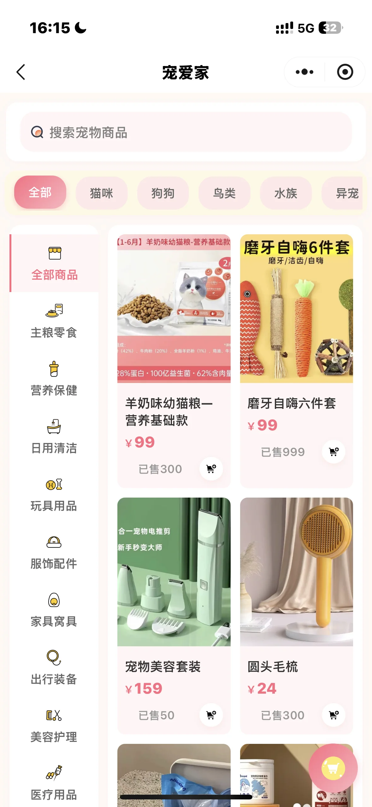
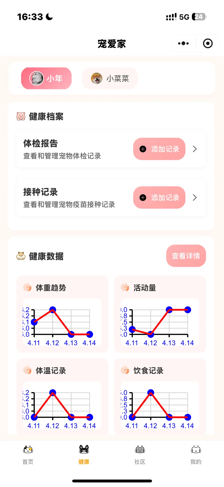
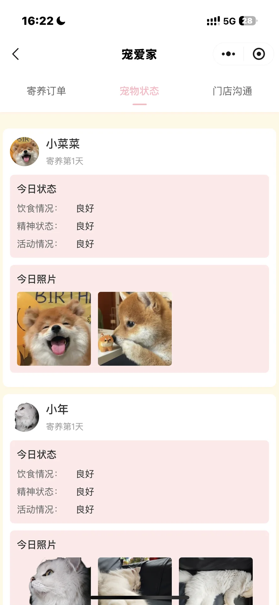
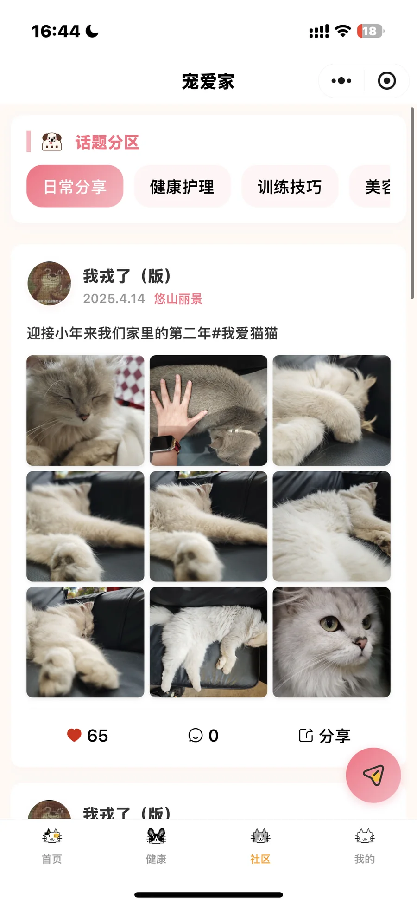
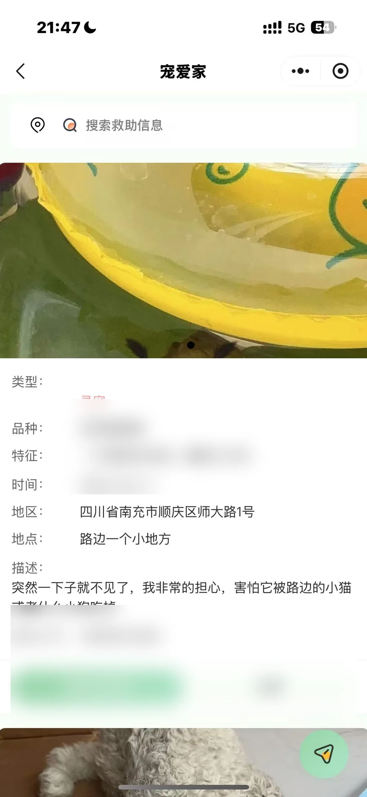
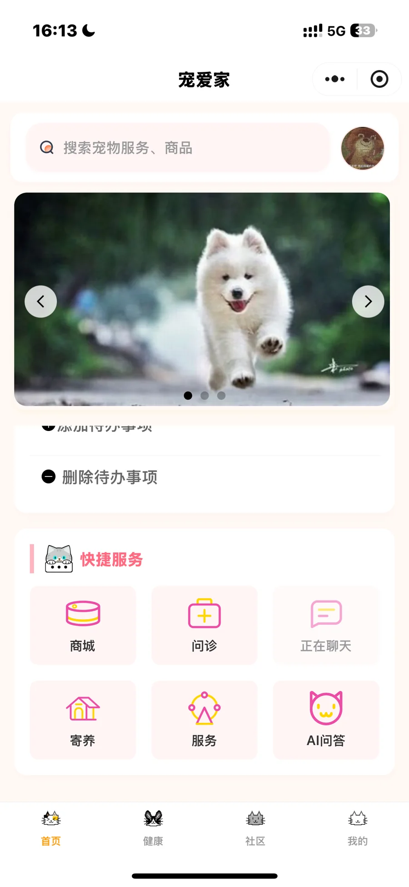
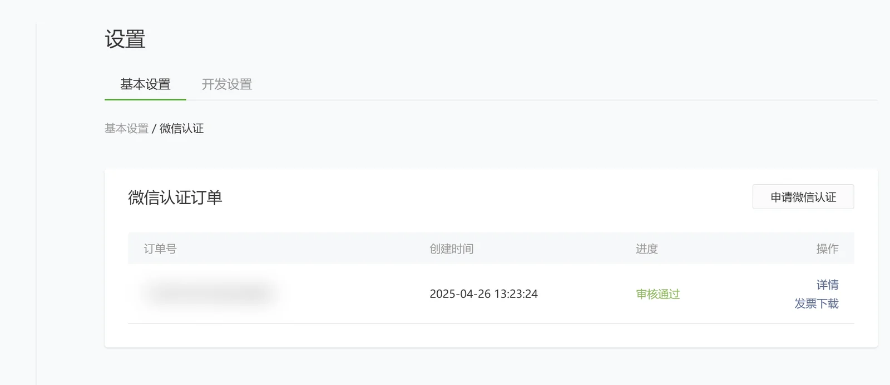
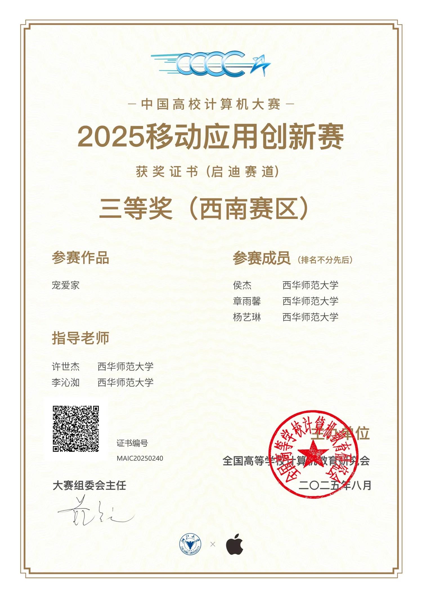
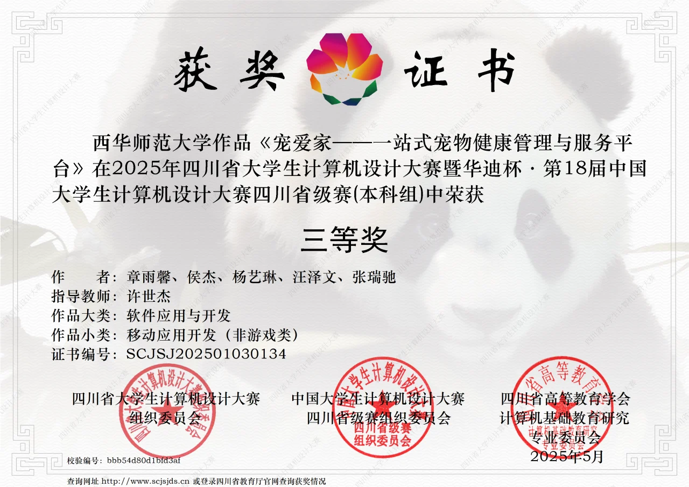

USER PROBLEM / 用户问题
疫苗、体检、体重与日常观察缺少连续记录。
PRODUCT OPPORTUNITY / 产品机会建立可持续更新的宠物档案，让健康变化能够被回看和比较。
CASE 04 / PET HOME
PROJECT DOSSIER / 项目档案
养宠过程中，用户需要持续记录健康数据、筛选可信服务、了解寄养状态，并在遇到问题时快速获取知识或发布求助。信息与服务分散，意味着每次行动都要重新查找、确认和沟通。
建立可持续更新的宠物档案，让健康变化能够被回看和比较。

集中服务入口、商品信息和订单状态，缩短从查找到行动的路径。
把寄养订单、宠物状态和门店沟通放进同一个服务过程。
用 AI 问答、社区内容和位置能力承接知识获取、经验交流与救助反馈。
宠物身份、健康记录、图片与主人关系集中维护在档案中；不同模块按任务读取相关信息，减少重复填写，并分别沉淀健康变化、服务订单、咨询建议、社区内容和求助信息。

通过宠物切换、健康档案、趋势数据和日常待办，按宠物积累历史信息。

商城与服务完成选择，订单关联具体宠物，寄养状态和门店沟通覆盖后续履约。
关联宠物信息，补充症状与记录，由 AI 整理情况并提供基础建议和风险提示。

通过话题浏览、内容发布、互动和达人认证，为经验交流提供入口与基础可信度。

将宠物特征、位置和联系方式组织在同一条信息中，连接同城浏览、传播与线索反馈。
界面截图来自项目实际实现版本；页面中的联系方式与位置类信息已脱敏。点击模块可以固定当前画面，再次点击可恢复浏览切换。
面对宠物异常时，用户往往难以一次说清品种、年龄、既往记录和当前症状。咨询流程先关联宠物档案，再引导补充问题信息，由 AI 整理情况并提供基础建议与后续行动参考。
先确认咨询对象，复用宠物品种、年龄等基础资料。
AI 输出用于基础养宠信息和行动参考，不替代兽医诊断。信息不足时继续追问，异常或紧急情况引导用户寻求专业帮助。
作为项目负责人，完成需求梳理、产品架构与核心流程设计，并负责前端代码实现；在后端协作、功能联调、测试修正和微信审核过程中持续推进交付，最终完成比赛版本上线。

完成产品架构、核心任务链路、页面流程与界面设计。
该记录证明项目实际经历微信小程序主体认证流程；比赛版本随后完成审核和上线。
订单号及账户信息已脱敏。

移动应用创新赛
计算机设计大赛该版本为 2025 年比赛项目，曾通过微信审核并上线；比赛结束后未继续运营，当前展示内容为项目交付阶段留存材料。
一站式的价值，在于同一份宠物信息能够持续服务于不同任务。
从健康记录到服务预约、AI 咨询和同城救助，宠物档案构成了各模块共享的信息基础。用户不需要反复建立身份和背景，产品也能围绕同一只宠物延续记录、服务与反馈。